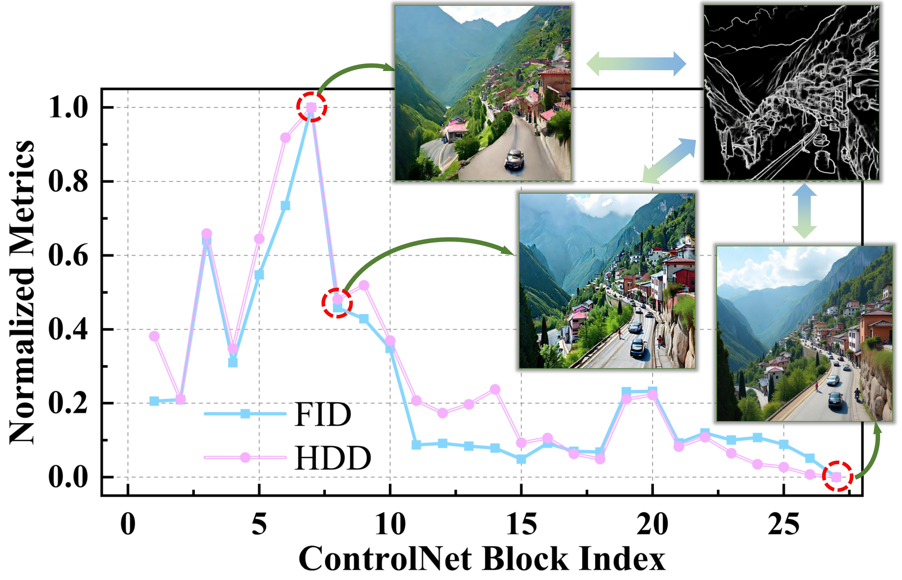
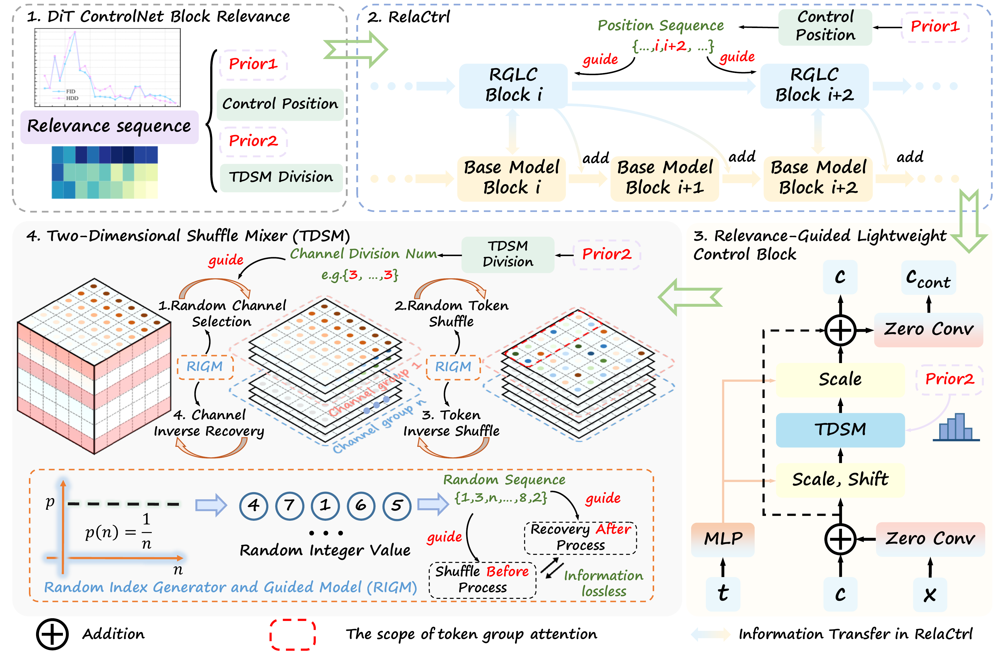
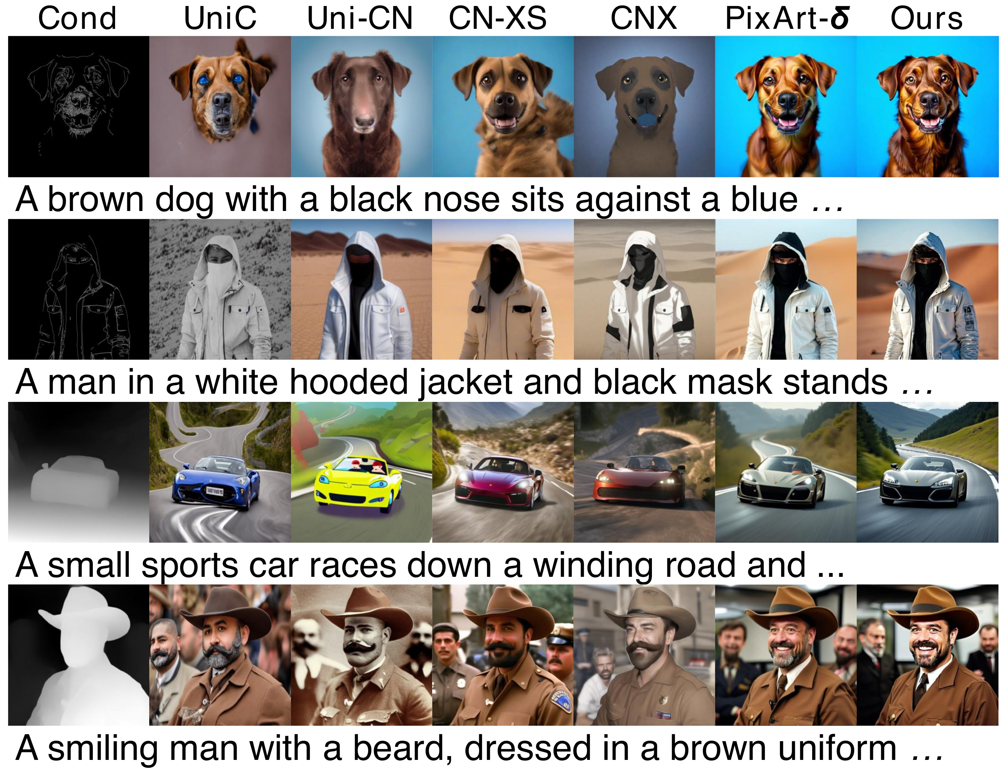
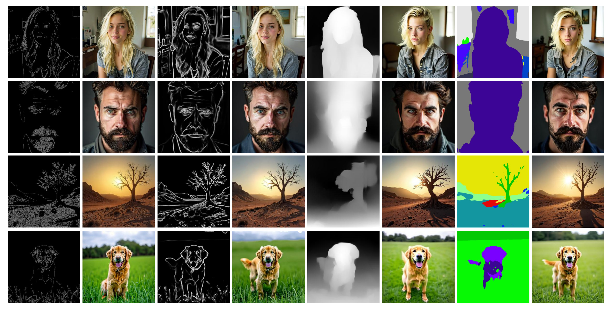

🎮 费曼一分钟（通俗速读）
给 DiT 加「可控生成」（Canny、Depth、Seg 等）时，主流做法很「笨重」：PixArt-δ 直接复制前 13 个 DiT block 做 ControlNet，参数和 FLOPs 各涨约 50%；OminiControl 把控制 token 拼进序列，token 数翻倍，FLOPs 涨约 70%。更关键的是——它们假设每一层对控制信号同等重要，均匀堆控制模块，造成大量冗余。
RelaCtrl 先做「层重要性体检」：逐层跳过 control block 推理，用 FID（生成质量）和 HDD（控制精度）排名，合成 ControlNet Relevance Score (CRS)——相关性在前中段层最高，深层很弱。于是只在 CRS 排名前 11 的位置放控制块（PixArt-δ 用 13 个），并用轻量 Two-Dimensional Shuffle Mixer (TDSM) 替换 copy-block 里的 SA+FFN，一次完成 token/channel mixing。
结果：相对 PixArt-α 基座（611M / 542 GFLOPs），RelaCtrl 仅 +45M 参数 (+7.4%)、+46.7 GFLOPs (+8.6%)，约为 PixArt-δ 控制开销的 15%，却在 COCO 控制任务上多项指标优于 PixArt-δ（如 Canny HDD 94.04、FID 20.34；Depth MSE-d 99.11；Seg mIoU 0.405）。
Abstract
The Diffusion Transformer (DiT) plays a pivotal role in advancing text-to-image and text-to-video generation, owing primarily to its inherent scalability. However, existing controlled DiT methods incur significant parameter and computational overheads and suffer from inefficient resource allocation due to their failure to account for the varying relevance of control information across different transformer layers.
We propose RelaCtrl, a Relevance-Guided Efficient Controllable Generation framework. First, we evaluate layer relevance via the ControlNet Relevance Score (CRS), measuring the impact of skipping each control layer on generation quality and control effectiveness. Based on relevance strength, we tailor the positioning, parameter scale, and modeling capacity of control layers. Additionally, we replace self-attention and FFN in copy blocks with the Two-Dimensional Shuffle Mixer (TDSM). Our approach achieves superior performance with only 15% of the parameters and computational complexity compared to PixArt-δ.
Diffusion Transformer 凭借可扩展性推动文生图/文生视频，但现有 DiT 可控方法引入大量额外参数与计算，且未考虑控制信息在不同 Transformer 层上的相关性差异，导致资源分配低效。
我们提出 RelaCtrl——相关性引导的高效可控生成框架。首先用 ControlNet Relevance Score 评估每层相关性（跳过该层对生成质量与控制效果的影响）；再按相关性定制控制层位置、参数规模与建模能力；并用 TDSM 替换 copy block 中的 SA 与 FFN。实验表明，相对 PixArt-δ 仅用约 15% 参数与计算即可取得更优性能。
段落功能
点出 DiT 可控的两难：必须加控制分支 vs 现有方法「均匀堆叠」导致冗余；宣告 CRS 引导放置 + TDSM 轻量化双管齐下。
逻辑角色
论证链起点：问题（参数/FLOPs 爆炸 + 层间相关性被忽视）→ 解法（CRS + RGLC/TDSM）→ 承诺（15% 开销、SOTA 性能）。
论证技巧 / 潜在漏洞
技巧：「15% vs PixArt-δ」是强 hook，同时锚定 AAAI 2026。漏洞：CRS 依赖 PixArt-α 上 skip-layer 实验，迁移到其他 DiT（Flux、SD3）是否成立未在摘要展开。
1. Introduction
DiT (Peebles and Xie 2023) with strong scalability has advanced T2I/T2V (PixArt-α, Flux, SD3, CogVideoX, Sora, etc.). Controlled generation methods like PixArt-δ and OminiControl extend DiT to real-world content creation.
However, two shortcomings persist. First, massive parameter/compute overhead: PixArt-δ duplicates the first 13 blocks (+50% params/FLOPs); OminiControl doubles tokens (+~70% FLOPs). Second, uniform control across layers ignores varying relevance — our ControlNet Relevance Score experiments show relevance peaks in early-middle layers and weakens in deeper layers (Fig. 1).
DiT 的可扩展性推动 PixArt-α、Flux、SD3 等；PixArt-δ、OminiControl 等将 DiT 扩展到可控生成场景。
但存在两大缺陷：① 参数/计算开销大——PixArt-δ 复制前 13 block（+50%）；OminiControl token 翻倍（+~70% FLOPs）。② 各层控制相关性不同却被均匀对待——CRS 实验显示前中段层相关性高、深层弱（Fig.1）。
段落功能
建立「DiT 可控已实用 vs 现有方法又胖又笨」的反差；用 Fig.1 skip-layer 曲线作为经验动机。
逻辑角色
问题语境：为何「复制前半网络」不是最优？预告——应按层相关性动态配置，而非增减复制 block 数量。
We propose RelaCtrl: place control blocks at high-CRS locations; skip weak-relevance positions. Replace copy-block SA+FFN with TDSM — random channel grouping + token shuffle + grouped attention for efficient token/channel mixing. Stronger correlation regions use fewer channel groups (wider attention). Results: only +45M params (+7.4%) and +46.7 GFLOPs (+8.6%) over PixArt-α, beating PixArt-δ on multiple control tasks.
我们提出 RelaCtrl：在高 CRS 位置放置控制块，弱相关位置留空；用 TDSM 替换 copy-block 的 SA+FFN，通过随机通道分组与 token shuffle 实现高效 mixing；高相关区域减少通道分组数以增强建模。相对 PixArt-α 仅 +45M 参数、+46.7 GFLOPs，多项控制任务超越 PixArt-δ。
段落功能
Intro 末段浓缩三大贡献：CRS 先验、RGLC 放置策略、TDSM 结构创新 → 预告实验数字。
论证技巧
把「层相关性曲线」从观察升格为设计原则——这是全文方法论 pivot。
📄 原文 Figure 1：ControlNet Relevance Score（skip layer → FID/HDD）

2. Related Works
Diffusion-Based Models: Latent diffusion (Rombach et al. 2022) and DiT (Peebles and Xie 2023; Chen et al. 2023) scale Transformers inside diffusion for SOTA T2I. Flux combines flow-matching with Transformer architecture.
Controllable Generation: Two paradigms — (1) train large multi-condition models from scratch; (2) fine-tune lightweight adapters on frozen backbones. ControlNet (Zhang et al. 2023) copies U-Net layers + zero conv; Uni-Control (MoE), ControlNet-XS extend bandwidth. These U-Net designs do not transfer directly to DiT. PixArt-δ adapts copy-block ControlNet to DiT but at +50% cost.
扩散模型：LDM 与 DiT 将 Transformer 引入扩散框架；Flux 等进一步结合 flow-matching。
可控生成：全量训练 vs 冻结主干+轻量分支。ControlNet 复制 U-Net 层；Uni-Control、ControlNet-XS 等改进交互。但这些 U-Net 方案难以直接用于 DiT；PixArt-δ 为 DiT 定制 copy-block 方案，代价是 +50% 开销。
段落功能
Related Work 把 RelaCtrl 放在「DiT 时代可控生成」子问题：U-Net ControlNet 成熟，DiT 只有 PixArt-δ 式笨重复制——效率是社区部署瓶颈。
逻辑角色
论证链的 literature gap：不是 reinvent control，而是 DiT-specific + relevance-aware + lightweight。
3. Method — CRS · RGLC · TDSM
DiT-ControlNet Relevance Prior: Train full copy-all-blocks ControlNet on PixArt-α (27 replicated modules). At inference, skip one control layer at a time; measure FID (quality) and HDD (control). Rank layers and compute:
$$CRS_i = \tfrac{1}{2}\left(\frac{F_i - F_{\min}}{F_{\max} - F_{\min}} + \frac{H_i - H_{\min}}{H_{\max} - H_{\min}}\right) \quad\text{(Eq. 1)}$$
where $F_i, H_i$ are normalized ranks of FID/HDD when layer $i$ is removed. Higher $CRS_i$ → layer $i$ is more critical. Key finding: critical modules concentrate in early-middle layers (blocks 5–7); removing last modules causes minimal loss — unlike LLM layer pruning trends.
DiT-ControlNet 相关性先验：在 PixArt-α 上训练全复制 control 分支（27 模块），推理时逐层跳过 control block，测 FID 与 HDD 并排名，合成 CRS（式 1）。$CRS_i$ 越高，该层对控制越关键。发现：关键层集中在前中段（block 5–7），深层可跳过且性能损失极小——与 LLM/DiT 主干的层剪枝规律不同。
$$CRS_i = \tfrac{1}{2}\left(\frac{F_i - F_{\min}}{F_{\max} - F_{\min}} + \frac{H_i - H_{\min}}{H_{\max} - H_{\min}}\right) \quad\text{（式 1）}$$
Skip-layer 诊断流程（自绘）
flowchart LR TRAIN["训练：27 层全复制 ControlNet"] --> INF["推理：逐层 skip 一层 control"] INF --> FID["FID rank F_i
生成质量"] INF --> HDD["HDD rank H_i
控制精度"] FID --> CRS["CRS_i = 0.5·norm(F) + 0.5·norm(H)"] HDD --> CRS CRS --> RANK["按 CRS 排序 → 选 top-11 放置控制块"]
设计取舍
CRS 融合质量与控制两维，避免只优化 FID 而牺牲 HDD。rank 归一化使不同量纲可比；代价是一次性 profiling 成本，且绑定 PixArt-α 架构。
Overall Architecture: Select the 11 highest-CRS positions (vs PixArt-δ's 13 copied blocks, ~15% param saving). Each position hosts a Relevance-Guided Lightweight Control Block (RGLC) replacing full copy blocks.
RGLC forward: Main branch feature $x$ passes zero conv and adds to condition $c$ → $c_{\rm in}$. Then:
$$c_{\rm cond} = \text{ZC}(\text{TDSM}(c_{\rm in}) + c_{\rm in}) \quad\text{(Eq. 2)}$$
$c_{\rm cond}$ adds to frozen main branch via zero conv. TDSM replaces SA (token mixer) + FFN (channel mixer) with grouped attention after random channel selection and 3D token shuffle.
整体架构：按 CRS 选取 top-11 位置放置控制模块（PixArt-δ 用 13 个，约省 15% 参数）。每处用 RGLC 替代完整 copy block。
RGLC 前向：主分支特征 $x$ 经 zero conv 加到条件 $c$ 得 $c_{\rm in}$，再经 TDSM 与残差，最后 zero conv 输出 $c_{\rm cond}$ 注入主分支：
$$c_{\rm cond} = \text{ZC}(\text{TDSM}(c_{\rm in}) + c_{\rm in}) \quad\text{（式 2）}$$
TDSM 用随机通道选取 + 3D token shuffle + 分组 attention 同时承担 token mixer 与 channel mixer 职能。
RelaCtrl 数据流（自绘）
flowchart TB MAIN["Frozen DiT block x"] --> ZC1["Zero Conv"] COND["Control condition c"] --> ADD["c_in = c + ZC(x)"] ZC1 --> ADD ADD --> TDSM["TDSM
channel shuffle + grouped SA"] TDSM --> RES["+ c_in residual"] RES --> ZC2["Zero Conv"] ZC2 --> OUT["c_cond → inject main branch"]
TDSM 理论要点
随机 channel 选取 + shuffle 使本窗口内 token 可来自任意位置，期望交互距离下界 $\Omega(\frac{\sqrt{2}}{4}(H+Wd_i))$，突破纯 local grouping；shuffle 后做 inverse recovery 保信息。
📄 原文 Figure 2：RelaCtrl 整体架构（MAIN method figure）

4. Experiments
Setup: COCO validation set; conditions: Canny, HED, Depth, Segmentation. Metrics: FID, CLIP-Aesthetics (C-Ae), CLIP-Score (C-SC) for quality/TC; HDD (edge), MSE-depth, mIoU (seg) for control fidelity.
Baselines: Uni-ControlNet, Uni-Control (SD1.5); ControlNet-XS, ControlNext (SDXL); PixArt-δ (DiT). PixArt-δ and RelaCtrl control branches trained from scratch under identical settings for fair comparison.
设置：COCO val；Canny/HED/Depth/Seg 四类条件。FID、C-Ae、C-SC 评质量与文本一致；HDD/MSE-d/mIoU 评控制保真。
基线：SD1.5/SDXL 代表方法 + PixArt-δ；PixArt-δ 与 RelaCtrl 控制分支同设置从零训练，保证公平。
| Method | Base | Δ Params | Δ FLOPs |
|---|---|---|---|
| PixArt-α | 611M / 542 GFLOPs | — | — |
| PixArt-δ ControlNet | 同上 | +48.16% | +49.87% |
| RelaCtrl | 同上 | +7.38% (+45M) | +8.61% (+46.7G) |
- 论点↔证据：RelaCtrl 控制开销约为 PixArt-δ 的 15%，却多项指标更优——效率增益来自 CRS 稀疏放置 + TDSM，非单纯减层。
Main Results (PixArt-α backbone): RelaCtrl achieves best or competitive scores across conditions. Highlights on COCO:
• Canny: HDD 94.04, FID 20.34 (vs PixArt-δ 96.26 / 21.38)
• Depth: MSE-d 99.11, FID 33.93
• Segmentation: mIoU 0.405, FID 33.76 (vs PixArt-δ 0.379 / 35.50)
Qualitative results show sharper edge alignment and better semantic preservation under varied control strengths (Fig. 3–4).
主结果（PixArt-α 主干）：RelaCtrl 在多项控制任务上最优或具竞争力。COCO 亮点：
• Canny：HDD 94.04、FID 20.34（PixArt-δ 96.26 / 21.38）
• Depth：MSE-d 99.11
• Seg：mIoU 0.405（PixArt-δ 0.379）
定性对比（Fig.3–4）显示更清晰的边缘对齐与多条件下语义保持。
| Condition | Method | Control↓ | FID↓ | Notes |
|---|---|---|---|---|
| Canny | RelaCtrl | HDD 94.04 | 20.34 | bold best |
| Canny | PixArt-δ | HDD 96.26 | 21.38 | +50% overhead |
| Depth | RelaCtrl | MSE-d 99.11 | 33.93 | bold best MSE-d |
| Seg | RelaCtrl | mIoU 0.405 | 33.76 | bold best mIoU |
- vs SD 系：U-Net ControlNet 在 DiT 时代仍被比较，RelaCtrl 在 PixArt-α 上全面领先同 backbone PixArt-δ。
- 公平性：控制分支同数据同 schedule 从零训练，非直接微调官方 δ 权重。
📄 原文 Figure 3：定性对比 vs 基线

📄 原文 Figure 4：不同控制条件下的生成效果

5. Conclusion
We presented RelaCtrl, addressing inefficient control integration in DiT. By analyzing ControlNet Relevance Score, we discovered that control information relevance peaks in early-middle layers — a pattern distinct from LLM/DiT main-branch pruning. Our relevance-guided placement and TDSM jointly reduce parameters and FLOPs while maintaining or improving control quality.
Experiments on COCO across Canny, HED, Depth, and Segmentation validate that RelaCtrl achieves superior performance with ~15% of PixArt-δ's control overhead, enabling efficient DiT controllable generation for community deployment and practical AI content creation.
我们提出 RelaCtrl，解决 DiT 可控集成低效问题。通过 CRS 分析发现控制相关性在前中段峰值——与 LLM/DiT 主干剪枝规律不同。相关性引导放置 + TDSM 共同降参降算力，且不损甚至提升控制质量。
COCO 上 Canny/HED/Depth/Seg 实验验证：RelaCtrl 以约 PixArt-δ 控制开销 15% 的成本取得更优性能，利于社区部署与实用 AI 内容创作。
段落功能
收束 CRS 发现 → RGLC/TDSM 设计 → 效率-性能 Pareto 改进；强调 DiT 可控的「层相关性先验」是新知识贡献。
逻辑角色
论证链终点——从 Intro「+50% 复制 block」到「+7.4% 参数仍 SOTA」闭环。
潜在漏洞
CRS/TDSM 超参（top-11、channel group 数）仍需 ablation 支撑；跨 backbone（Flux/SD3）与 video DiT 未充分验证。
符号速查表
| 符号 | 含义 |
|---|---|
| $CRS_i$ | 第 $i$ 层 ControlNet Relevance Score（式 1），FID/HDD rank 各半加权 |
| $F_i, H_i$ | 跳过第 $i$ 层 control block 时的 FID / HDD 排名 |
| $c, x, t$ | 控制条件、主分支对应层特征、扩散时间步 embedding |
| $c_{\rm in}$ | 条件输入 $c + \text{ZC}(x)$，融合主分支信息 |
| $c_{\rm cond}$ | 控制分支输出，经 ZC 注入主分支（式 2） |
| ZC | Zero Convolution，训练初期零初始化保证主干不受影响 |
| TDSM | Two-Dimensional Shuffle Mixer，替换 SA+FFN 的轻量 token/channel mixer |
| RGLC | Relevance-Guided Lightweight Control Block，含 TDSM 的控制模块 |
| $S, n, d_i$ | TDSM 随机选取/shuffle 函数；通道分组数；第 $i$ 组通道维 |
| HDD / MSE-d / mIoU | 边缘控制 Hausdorff 距离 / 深度 MSE / 分割 mean IoU |
论证结构总览
→ 观察（skip-layer 实验：CRS 前中段峰值、深层可删 → Fig.1）
→ 论点（CRS 引导稀疏放置 top-11 + RGLC/TDSM 轻量化 copy block）
→ 方法（式 1 CRS；式 2 $c_{\rm cond}=\text{ZC}(\text{TDSM}(c_{\rm in})+c_{\rm in})$；TDSM 2D shuffle 理论）
→ 证据（+7.38% params / +8.61% FLOPs vs α；Canny HDD 94.04 FID 20.34；Depth MSE-d 99.11；Seg mIoU 0.405；Fig.2–4）
→ 结论（~15% PixArt-δ 控制开销、AAAI 2026）
核心主张（一句话）
通过量化 DiT ControlNet 各层「删层敏感性」(CRS) 并据此稀疏放置轻量 TDSM 控制块，可在几乎不增开销的前提下超越 PixArt-δ 式全复制方案。
来源：arXiv:2502.14377 · AAAI 2026 · Project · GitHub
🧩 结构化十问（AI 解构）
让 AI 当助教，从十个角度提取论文骨架。
Q1 · 论文试图解决什么问题？
Q2 · 这是否是一个新问题？
Q3 · 要验证什么科学假设？
Q4 · 有哪些相关研究？如何归类？
- DiT T2I：PixArt-α/δ, Flux, SD3
- U-Net 可控：ControlNet, Uni-Control, ControlNet-XS, ControlNext
- DiT 可控：PixArt-δ (copy block), OminiControl (token concat)
- 高效 Mixer：MetaFormer, grouped/shuffle attention (Huang et al.)
Q5 · 解决方案的关键是什么？
Q6 · 实验是如何设计的？
Q7 · 用什么数据集评估？代码开源吗？
Q8 · 实验结果是否很好支持了假设？
Q9 · 这篇论文到底有什么贡献？
Q10 · 下一步可以做什么？
🔬 深挖追问
第一性原理 · 本质
ControlNet 的本质是在冻结生成主干旁路注入条件梯度场。U-Net 有 encoder/decoder 层次，copy 前半合理；DiT 是同质 block 堆叠，「复制前 13 层」是 PixArt-δ 的启发式，并非最优。RelaCtrl 把「哪一层该听控制信号」变成可测量、可排序的 CRS——从 craft 升格为 data-driven design。
第一性原理 · CRS vs 剪枝文献
LLM/DiT 主干剪枝常发现深层冗余；ControlNet 分支却前中段最敏感。直觉：浅层控制特征与 spatial condition（边缘/深度）对齐，深层更负责语义/纹理，control residual 边际递减。这解释为何「少复制两层」不够——删错层比少层更伤。
第一性原理 · TDSM 数学
MetaFormer 分解 token mixer (SA) + channel mixer (FFN)。TDSM 用随机 $S: c_{\rm in}\to c_{\rm rs}^i$ 在 $H\times W\times d_i$ 局部窗做 SA，期望交互距离 $d(t_j)\geq\Omega(\frac{\sqrt{2}}{4}(H+Wd_i))$（Thm 4），shuffle+recovery 保 reversible。高 CRS 层减小 $n$（更大 $d_i$）= 相关性引导的容量分配。
批判性思维 · 我们还没问的根本问题（盲区）
- CRS 任务依赖：Fig.1 基于单一条件训练的全复制模型；Canny 上得到的 CRS 排序用于 Depth/Seg 是否最优？
- top-11 离散性：11 vs 13 是 ablation 结果，缺少连续 Pareto 曲线（层数 vs FID/HDD）。
- TDSM 随机性：训练/推理 shuffle 是否固定 seed？对可复现工业部署的影响未讨论。
- 与 OminiControl 对比：token 翻倍路线参数少但 FLOPs 高；两种 efficiency 维度未统一 benchmark。
- Scale-up：611M PixArt-α 上验证；Flux 级 DiT 上 CRS 分布是否仍前中段峰值？
- 训练成本：虽推理轻，CRS profiling 需先训练 27-layer full ControlNet——一次性成本仍高。